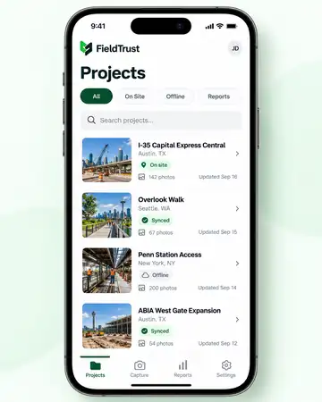
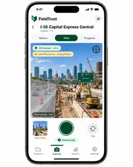
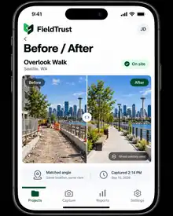
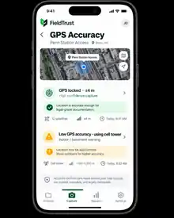
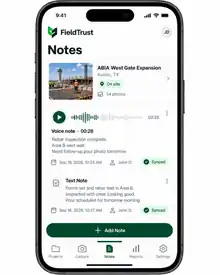

01 · CAPTURE
Capture proof where the work happens.
Before, After and Progress modes show GPS confidence in feet and confirm the photo is saved locally before upload begins.
Capture field work with location confidence, matched before/after photos, local-first saving, and reports clients can verify.
Product questions: rwecho@live.com



Show the workflow instead of asking customers to imagine it: capture context, compare change, add a note, and hand over a clean record.
Before, After and Progress modes show GPS confidence in feet and confirm the photo is saved locally before upload begins.

Ghost Overlay helps crews reproduce the same angle so progress is easier to trust.
Turn the job record into a professional report with identity and verification entry points.
Customers should understand FieldTrust by scanning the product: Projects → Capture → Compare → Check location → Add context → Share the report.
Job, location, photo count and sync state stay together.
Before, After and Progress with GPS locked at ±12 ft.
Matched-angle comparison with Ghost Overlay.

Make strong vs. weak location confidence explicit.

Capture work context without typing long field notes.
Report ID, scan-to-verify, sharing and PDF export.
Different trades have different workflows. The evidence problem is the same: prove what was there, what changed, and what the customer received.
Daily walks become a searchable record for owners, PMs, warranty questions and disputes.
Capture → flag → compare → reportDocument unit condition, serial plate, repair and final state before leaving site.
Keep room-by-room evidence tied to property, date, area and inspection stage.
Preserve progress context across crews and long project timelines.
Supervisors verify completed service without chasing texts and scattered photos.
Record condition found, action taken and condition left behind.
West Gate Expansion 12 photos
Overlook Walk Report shared
I-35 Central GPS verified
Penn Station Access Synced
Managers see synced field logs without chasing crews through SMS, WhatsApp, email or shared folders.
FieldTrust is designed so later changes can be detected. Capture context and file fingerprints create a traceable integrity record without making exaggerated legal claims.
Report ID · FT-2026-0916-026
✓ Integrity check passedCryptographically signed capture metadata · tamper-evident file fingerprint · traceable report identity
We are speaking with contractors and field teams to confirm the workflows, evidence requirements and reporting details that matter most.
rwecho@live.com